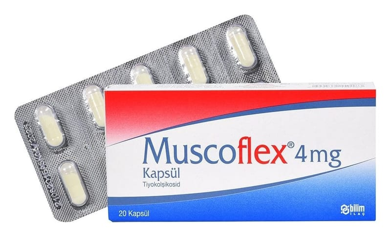

Muscoflex 4 mg Kapsül, 28 Adet

Ne için kullanılır
KT · Bölüm 1MUSCOFLEX, kapsül formunda olup 4 mg tiyokolşikosid etkin maddesini içerir. Her bir kutuda, blisterde 20 veya 28 kapsül bulunmaktadır. Şeffaf jelatin kapsül içinde sarı renkli granül içerir.
MUSCOFLEX esas olarak kas gevşetici etkinliğe sahiptir. MUSCOFLEX, yetişkinlerde ve 16 yaştan itibaren ergenlerde ani ortaya çıkan omurilik kaynaklı ağrılı kas kasılmalarının ek tedavisinde kullanılır.